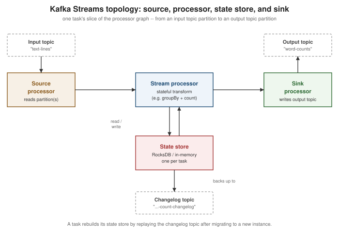

Kafka Streams
|
This content was generated with the assistance of AI and should be verified against the official documentation before being relied on in production. |
Kafka Producers and Kafka Consumers cover the client libraries an application uses to move records into and out of topics one at a time. Kafka Streams is a Java library, not a separate cluster or service, that builds a stream-processing application directly on top of that same producer/consumer machinery: it reads from input topics, applies transformations, aggregations and joins, and writes results to output topics, all while running as ordinary instances of the application’s own JVM process rather than a submitted job on some external processing cluster. This page covers how a Kafka Streams application is structured, its core abstractions, windowed and stateful processing, exactly-once and fault tolerance, and testing.
Topology: source, processor, and sink nodes
Every Kafka Streams application is, under the hood, a topology: a directed graph of processor nodes.
Source processors read records from one or more input topics and feed them into the graph; stream
processors transform, filter, aggregate or join records flowing through; and sink processors write results
back out to output topics. Applications rarely build this graph by hand — the high-level Streams DSL
(KStream, KTable, operations like filter(), mapValues(), groupByKey(), join()) compiles down to
exactly this processor topology, while the lower-level Processor API lets an application assemble it
directly, node by node, when the DSL’s built-in operators aren’t expressive enough. The figure below shows the
shape every DSL pipeline eventually takes: a source reading a topic, a stateful processor backed by a local
state store, and a sink writing the result to another topic.

A running application splits its topology into tasks, the actual unit of parallelism: Kafka Streams creates
one task per input partition (or, for a topology reading several co-partitioned topics, one task per partition
group), and every task owns a fixed slice of the graph pinned to those specific partitions. Tasks are
distributed across however many instances and threads (num.stream.threads) the application runs with, so
adding instances increases parallelism up to the input topic’s partition count, exactly as it does for a
consumer group.
KStream, KTable, GlobalKTable, and stream-table duality
-
KStream<K, V>is an unbounded, insert-only sequence of records — every record is an independent event, and anullvalue is a normal record like any other (unlikeKTable, below, where it means something specific). -
KTable<K, V>represents a changelog: each record is an upsert (or, with anullvalue, a delete) into a table keyed byK, so aKTableat any moment reflects the latest value per key, not the full history of values that ever arrived. AKTableis always backed by a local state store (below) so that latest-value view can be queried and joined against without re-reading the entire changelog on every access. -
GlobalKTable<K, V>is aKTablevariant that is fully replicated onto every application instance, rather than partitioned across them the way an ordinaryKTableis. That costs more local storage per instance but removes the co-partitioning requirement described under Joins below — useful for small, broadcastable reference data (e.g. a currency or product catalog) that many differently-keyed streams need to join against.
These two shapes are two views of the same thing — Kafka’s own documentation calls this the stream-table
duality: a stream can always be read as the sequence of changes that would reconstruct a table (aggregating a
KStream into a KTable is exactly this), and a table can always be read as the stream of changes that
produced it (a KTable’s changelog is a `KStream of upserts, exposed via toStream()). groupByKey()
aggregate()/count()/reduce() moves from stream to table; toStream() moves from table back to stream.
Event time, processing time, and ingestion time
Every record Kafka Streams handles carries a timestamp, extracted by a TimestampExtractor (configurable via
default.timestamp.extractor), and that timestamp is what windowing and grace periods (below) are measured
against. Three distinct notions of "time" apply here, and it matters which one is in play:
| Notion | Meaning |
|---|---|
Event time |
When the event actually happened at its source — the timestamp the producer set on the |
Ingestion time |
When the broker appended the record to the partition log, if the topic is configured with
|
Processing time |
When this application instance actually processes the record, read from the local system clock via the
|
A custom TimestampExtractor implementation can also pull a timestamp out of the record’s payload itself (e.g.
a field in a JSON or Avro body), which is the common choice when the producer’s own record timestamp cannot be
trusted.
Stateless and stateful operations
Stateless operations transform each record independently, with no memory of records seen before it:
filter()/filterNot(), map()/mapValues(), flatMap()/flatMapValues(), selectKey(), branch()/split(),
foreach(), and peek(). mapValues()/flatMapValues()/filter() on a keyed stream can run without
repartitioning as long as the key itself is untouched; anything that changes the key (selectKey(),
a key-changing map()) triggers Kafka Streams to insert an internal repartition topic before any downstream
operation that depends on key-based grouping, since a changed key generally belongs on a different partition.
Stateful operations need to remember something about records they’ve already seen, and every one of them is
backed by a state store: groupByKey()/groupBy() followed by aggregate(), reduce(), or count(); the join
operators covered below; and windowed variants of all of these. Because they depend on a local store keyed
consistently by partition, stateful operations are also where co-partitioning and repartition topics matter
most — see Joins and State stores below.
Windowing
groupByKey()/groupBy() can be followed by .windowedBy(…) before an aggregation, bucketing records by
time instead of aggregating over the whole unbounded stream. Kafka Streams provides four window types:
| Window type | Behavior |
|---|---|
Tumbling ( |
Fixed-size, non-overlapping, gapless windows — every record belongs to exactly one window. |
Hopping ( |
Fixed-size windows that advance by an interval smaller than their size, so they overlap and a record can fall
into more than one window at once. A hopping window with |
Sliding ( |
A window is created around each record, spanning |
Session ( |
Dynamically sized per key: a session stays open as long as records for that key keep arriving within |
Every windowed aggregation also has a grace period — how long after a window’s end timestamp has passed
records still bearing a timestamp inside that window are accepted and folded into its result before the window
is considered closed and further late arrivals for it are dropped. Grace period and retention are related but
distinct: retention (Materialized.withRetention(…)) controls how long a window’s result stays queryable in
the state store after it closes, while grace controls how long it stays updatable. suppress() can additionally
hold back intermediate results for a window entirely, emitting only its final value once the grace period has
elapsed, when downstream consumers should see one settled result per window rather than a stream of
continuously-updated partials.
Joins
Kafka Streams supports four join shapes, each with different windowing and partitioning requirements:
| Join | Windowed? | Notes |
|---|---|---|
|
Yes — |
Both sides are unbounded events; the join only matches records from each side whose timestamps fall within the configured window of each other. |
|
No |
Every |
|
No |
A fully materialized, incrementally maintained join: an update on either side re-emits the joined result for that key immediately. |
|
No |
Like |
KStream-KStream, KStream-KTable, and KTable-KTable joins all require their inputs to be
co-partitioned: the same number of partitions, keyed and partitioned the same way, so that a given key’s
records from both sides always land in the same task. Kafka Streams inserts an internal repartition topic
automatically when it can’t prove two inputs are already co-partitioned (e.g. after a key-changing operation).
GlobalKTable joins are the one exception — since every instance holds the entire table, no co-partitioning or
repartitioning is needed for that side at all.
State stores and changelog topics
Every stateful operator (a KTable, a windowed aggregation, a join) is backed by a state store — by default
a local, disk-resident RocksDB instance per task (an in-memory store is also available via
Stores.inMemoryKeyValueStore(…), trading durability-on-restart for avoiding disk I/O). Because that store is
local to whichever instance currently owns the task, Kafka Streams also continuously writes every change made to
it to an internal, compacted changelog topic (named <application.id>-<store-name>-changelog by default,
one partition per task). If a task migrates to a different instance — on scale-out, restart, or failure — the
new owner rebuilds the store’s contents by replaying that changelog before resuming processing, rather than
needing to reprocess the entire original input topic from the beginning. This is exactly the "changelog topic"
box under the state store in the topology figure above. Windowed stores work the same way, with the additional
retention window described under Windowing controlling how long old window segments are kept before being
dropped from both the local store and its changelog.
Exactly-once v2, interactive queries, and the streams rebalance protocol
Exactly-once v2 (processing.guarantee=exactly_once_v2, the current, non-deprecated exactly-once setting;
the default remains at_least_once) extends the transactional producer covered on
Kafka Reliability and Exactly-Once Semantics to
the whole read-process-write cycle a topology performs: reading input, updating state stores and their
changelogs, and writing output are all committed atomically per task. Compared to the original exactly-once
implementation, v2 uses a single transactional producer per stream thread instead of one per task, which
sharply reduces the number of open producer transactions (and their associated broker-side resources) an
application with many tasks needs.
Interactive queries let an application expose its own state stores for read access without a separate
datastore: KafkaStreams.store(StoreQueryParameters.fromNameAndType(storeName, QueryableStoreTypes.keyValueStore()))
returns a read-only view of a local store’s contents. Because each instance only holds the stores for the tasks
it owns, querying the entire application’s state (not just what happens to be local) requires an application
to add its own RPC layer — typically a small REST endpoint — and use application.server plus
KafkaStreams.metadataForKey(…)/allMetadataForStore(…) to discover which instance actually owns the key
being queried before forwarding the request there.
The streams rebalance protocol (KIP-1071, production-ready since Kafka 4.2) introduces a dedicated streams
group type, distinct from the ordinary consumer group protocol Kafka Streams previously rode on top of, built
on the same broker-side group coordination infrastructure introduced for consumer groups by KIP-848 (see
Kafka Consumers). Task assignment moves from client-side logic to
the broker via a new StreamsGroupHeartbeat RPC, which removes an entire class of client-side assignment bugs,
lets the broker create and manage a topology’s internal topics directly, and makes assignor tuning
(e.g. the balanced or sticky task assignors) a broker-side configuration change rather than something that
requires redeploying the application.
Handling failures: dead-letter-queue handlers (KIP-1034)
Deserialization failures, uncaught exceptions during processing, and production failures each have a dedicated
handler interface an application can implement and register: DeserializationExceptionHandler,
ProcessingExceptionHandler, and ProductionExceptionHandler. KIP-1034 extends all three so that, instead of
only choosing to fail the application or skip the record, a handler’s response can also include one or more
records to route to a dead-letter queue topic, configured via errors.dead.letter.queue.topic.name.
Kafka Streams automatically stamps every record it routes there with header metadata identifying the failure
(streams.errors.exception, streams.errors.stacktrace, __streams.errors.message, plus the original
topic/partition/offset), so a downstream consumer of the dead-letter topic has enough context to triage the
failure without re-deriving it. This mirrors the sink connector dead-letter queue covered on
Kafka Connect, but as a first-class part of the DSL/Processor API
handler contract rather than something only Connect sink tasks could do.
Testing with TopologyTestDriver
TopologyTestDriver runs a topology entirely in-process, against in-memory input/output "topics", with no
running broker required — the right tool for a unit test of a topology’s logic, as opposed to an integration
test exercising the real client/broker interaction. A test builds the same Topology (or StreamsBuilder) the
application uses, drives it with a TestInputTopic, and asserts against a TestOutputTopic:
package com.example.streams;
import java.time.Duration;
import java.time.Instant;
import java.util.Properties;
import org.apache.kafka.common.serialization.Serdes;
import org.apache.kafka.streams.StreamsBuilder;
import org.apache.kafka.streams.StreamsConfig;
import org.apache.kafka.streams.TestInputTopic;
import org.apache.kafka.streams.TestOutputTopic;
import org.apache.kafka.streams.Topology;
import org.apache.kafka.streams.TopologyTestDriver;
import org.apache.kafka.streams.kstream.KStream;
import org.junit.jupiter.api.AfterEach;
import org.junit.jupiter.api.BeforeEach;
import org.junit.jupiter.api.Test;
import static org.junit.jupiter.api.Assertions.assertEquals;
class WordCountTopologyTest {
private TopologyTestDriver testDriver;
private TestInputTopic<String, String> inputTopic;
private TestOutputTopic<String, Long> outputTopic;
@BeforeEach
void setUp() {
StreamsBuilder builder = new StreamsBuilder();
KStream<String, String> textLines = builder.stream("text-lines");
WordCountTopology.buildWordCount(textLines).to("word-counts");
Topology topology = builder.build();
Properties props = new Properties();
props.put(StreamsConfig.APPLICATION_ID_CONFIG, "word-count-test");
props.put(StreamsConfig.BOOTSTRAP_SERVERS_CONFIG, "dummy:0000");
testDriver = new TopologyTestDriver(topology, props);
inputTopic = testDriver.createInputTopic("text-lines",
Serdes.String().serializer(), Serdes.String().serializer());
outputTopic = testDriver.createOutputTopic("word-counts",
Serdes.String().deserializer(), Serdes.Long().deserializer());
}
@AfterEach
void tearDown() {
testDriver.close();
}
@Test
void countsWordsAcrossMultipleLines() {
inputTopic.pipeInput("key1", "kafka streams kafka", Instant.now());
inputTopic.pipeInput("key2", "streams streams", Instant.now().plus(Duration.ofSeconds(1)));
assertEquals(1L, outputTopic.readKeyValue().value);
assertEquals(1L, outputTopic.readKeyValue().value);
assertEquals(2L, outputTopic.readKeyValue().value);
assertEquals(2L, outputTopic.readKeyValue().value);
assertEquals(3L, outputTopic.readKeyValue().value);
}
}Reading a state store’s contents directly (testDriver.getKeyValueStore(storeName)) is also supported, which is
useful for asserting on an aggregation’s current value without relying on the exact sequence of changelog
records emitted downstream. See
Apache Kafka Documentation — Testing a Streams
Application for advice on testing punctuators, windowed stores, and multi-topology test setups.
Where Kafka Streams stops, and Flink/ksqlDB begin
Kafka Streams is a library embedded in an application’s own JVM process, reading and writing Kafka topics only — it has no cluster manager, no job scheduler, and no non-Kafka source/sink connectors of its own, which keeps
it lightweight but also bounds what it can do. Apache Flink is a full distributed stream-processing engine
with its own cluster, job manager, and a much broader connector ecosystem (files, databases, and non-Kafka
systems alongside Kafka), better suited to jobs needing more sophisticated resource management, non-Kafka
sources/sinks, or processing models Kafka Streams doesn’t offer. ksqlDB is a SQL layer built on top of Kafka
Streams itself, trading the DSL’s Java flexibility for a declarative, operator-friendly interface — a good fit
when stream-processing logic is simple enough to express as a CREATE STREAM … AS SELECT statement and a
dedicated ksqlDB cluster is an acceptable operational addition, but not a replacement for Kafka Streams'
programmability once the logic outgrows plain SQL.
A word-count example
A classic Kafka Streams example: count occurrences of each word across a stream of text lines, using the current Streams DSL.
package com.example.streams;
import java.util.Arrays;
import java.util.Locale;
import java.util.Properties;
import org.apache.kafka.common.serialization.Serdes;
import org.apache.kafka.streams.KafkaStreams;
import org.apache.kafka.streams.StreamsBuilder;
import org.apache.kafka.streams.StreamsConfig;
import org.apache.kafka.streams.kstream.KStream;
import org.apache.kafka.streams.kstream.KTable;
import org.apache.kafka.streams.kstream.Produced;
public class WordCountTopology {
public static void main(String[] args) {
Properties props = new Properties();
props.put(StreamsConfig.APPLICATION_ID_CONFIG, "word-count-application");
props.put(StreamsConfig.BOOTSTRAP_SERVERS_CONFIG, "localhost:9092");
props.put(StreamsConfig.DEFAULT_KEY_SERDE_CLASS_CONFIG, Serdes.String().getClass());
props.put(StreamsConfig.DEFAULT_VALUE_SERDE_CLASS_CONFIG, Serdes.String().getClass());
StreamsBuilder builder = new StreamsBuilder();
KStream<String, String> textLines = builder.stream("text-lines");
buildWordCount(textLines).to("word-counts", Produced.with(Serdes.String(), Serdes.Long()));
try (KafkaStreams streams = new KafkaStreams(builder.build(), props)) {
Runtime.getRuntime().addShutdownHook(new Thread(streams::close));
streams.start();
}
}
static KTable<String, Long> buildWordCount(KStream<String, String> textLines) {
return textLines
.flatMapValues(line -> Arrays.asList(line.toLowerCase(Locale.ROOT).split("\\W+")))
.groupBy((key, word) -> word)
.count();
}
}flatMapValues() splits each line into words without changing the key, so no repartition topic is needed until
groupBy() re-keys the stream by word; count() is exactly the stream-to-table aggregation described above,
producing a KTable<String, Long> whose changelog to(…) writes out to word-counts. See
Apache Kafka Documentation — Streams DSL for the
full operator reference, including Materialized for naming and configuring the underlying state store
explicitly.